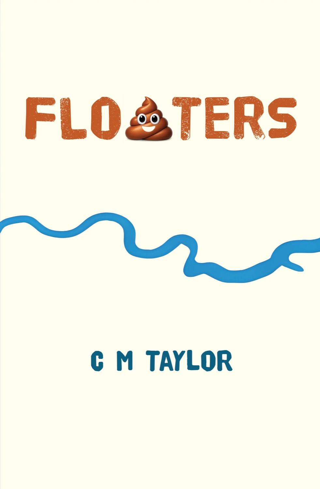

Book · 01
Floaters 2026
Set against the UK’s sewage crisis, Floaters is a coming-of-age revenge caper — funny, filthy and quietly furious about the state of the nation’s rivers.
Published in a 215-copy art edition — one for every mile of the Thames — with half of all profits going to Surfers Against Sewage.
“A coming-of-age revenge caper.”The Guardian
Readers especially love PC Mixtape. Featured by The Guardian, February 2026.